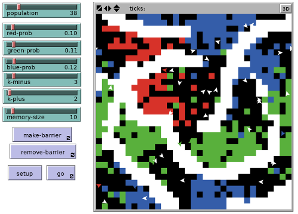

NetLogo
You’ll find the NetLogo Manual to be useful.
http://ccl.northwestern.edu/netlogo/5.0.1/
Table of Contents
Building the “ant brood sorting” model
This model is described in the article “Go to the ant”: Engineering principles from natural multi-agent systems (PDF) by Parunak (1997).
This is the description from the article:
System Behavior An ant hill houses different kinds of things, including larvae, eggs, cocoons, and food. The ant colony keeps these entities sorted by kind. For example, when an egg hatches, the larva does not stay with other eggs, but is moved to the area for larvae. Computer scientists have developed a number of algorithms for sorting things, but no ant in the ant hill is executing a sorting algorithm.
Responsibilities The individual ant algorithm that yields system-level sorting behavior contains some behaviors similar to those in the path-planning problem.
- Wander randomly around the nest.
- Sense nearby objects, and maintain a short memory (about ten steps) of what has been seen.
- If an ant is not carrying anything when it encounters an object, decide stochastically whether or not to pick up the object. The probability of picking up an object decreases if the ant has recently encountered similar objects.
In the emulation, the probability of picking up an object is
P = (K+ /(K+ + F))^2whereFis the fraction of positions in short-term memory occupied by objects of the same type as the object sensed andK+is a constant. AsFbecomes small compared withK+, the probability that the ant will pick up the object approaches certainty.- If an ant is carrying something, at each time step decide stochastically whether or not to drop it, where the probability of dropping a carried object increases if the ant has recently encountered similar items in the environment. In the emulation,
P = (F / (K- + F))^2whereFis the fraction of positions in short-term memory occupied by objects of the same type as the object carried, andK-is another constant. AsFbecomes large compared withK-, the probability that the carried object will be put down approaches certainty.Integration As in path planning, the Brownian walk eventually brings the wandering ants to examine all objects in the nest. Even a random scattering of different items in the nest will yield local concentrations of similar items that stimulate ants to drop other similar items. As concentrations grow, they tend to retain current members and attract new ones. The stochastic nature of the pick-up and drop behaviors enables multiple concentrations to merge, since ants occasionally pick up items from one existing concentration and transport them to another.
The put-down constant
K-must be stronger than the pick-up constantK+, or else clusters will dissolve faster than they form. Typically,K+is about 1 andK-is about 3. The length of short-term memory and the length of the ant’s step in each time period determine the radius within which the ant compares objects. If the memory is too long, the ant sees the entire nest as a single location, and sorting will not take place.
NetLogo code

Each turtle will have a seen variable that will be a list.
turtles-own [ seen ]
Each patch will have a barrier? variable that will be true or false
depending on whether the patch is a barrier.
patches-own [ barrier? ]
The “setup” button will run this procedure. First, the NetLogo
procedure clear-all clears the screen. Then, the setup-patches and
setup-turtles procedures (which we’ll create) are executed.
to setup clear-all setup-patches setup-turtles end
The patches will have colors or be black if they are blank space. The probability of being some color or black depends on sliders. All patches by default are not barriers.
to setup-patches ask patches ;; make each patch do the following [ set barrier? false ;; all start as non-barriers ifelse random-float 1.0 < red-prob ;; possibly turn red [ set pcolor red ] [ ifelse random-float 1.0 < (red-prob + green-prob) ;; possibly turn green [ set pcolor green ] [ ifelse random-float 1.0 < (red-prob + green-prob + blue-prob) ;; possibly turn blue [ set pcolor blue ] [ set pcolor black ] ] ] ] ;; otherwise, not red, green, or blue end
Now we set up the turtles (ants):
to setup-turtles create-turtles population ;; this is a slider variable ask turtles [ setxy 0 0 ;; put each turtle (ant) in the middle set seen [] ;; set its "seen" list to the empty list set color white ] ;; make it white end
The “go” button moves each ant around the space, avoiding barriers (how to draw barriers is described below). An ant may choose to pickup or drop a colored object if appropriate. But first we “look” by updating the ant’s “seen” list.
to go ask turtles [ look drop pickup avoid-barrier ] end
This is how the ant “looks” (note that the memory-size variable is
set by a slider):
to look if pcolor != black and memory-size > 0 ;; if the ant is on a color, and it has a memory [ if length seen >= memory-size ;; if the seen list is full... [ set seen but-last seen ] ;; drop the last item in the list set seen fput pcolor seen ] ;; put the item seen now at the front of the list (fput) end
The ant may choose to “pickup” an object. Picking up an object actually just turns the patch to black, and turns the ant to the color that it “picked up.”
to pickup ;; if the ant is white (not holding an object), ;; and the patch color (pcolor) is not black, ;; and the patch color is not white (which is a barrier) if color = white and pcolor != black and pcolor != white ;; then let f be the value (number of items in 'seen' list matching this color) ;; divided by the size of seen list; ;; we use 'filter [? = pcolor] seen' to reduce the 'seen' list to only ;; those items that equal the patch color [ let f (length (filter [? = pcolor] seen)) / (length seen) ;; now choose a random number, and see if it is less than ;; the value (K+ / (K+ + F))^2 where K+ is a constant set by a slider if random-float 1.0 < (k-plus / (k-plus + f)) ^ 2 [ set color pcolor ;; set ant color to patch color set pcolor black ] ] ;; set patch color to black end
Dropping is the opposite:
to drop ;; if the ant is not white (i.e., if it is holding an object), ;; and the patch color is black if color != white and pcolor = black ;; figure out how many seen objects have the same color as the ant [ let f (length (filter [? = color] seen)) / (length seen) ;; calculate (F / (K- + F))^2 where K- is a constant set by a slider if random-float 1.0 < (f / (k-minus + f)) ^ 2 [ set pcolor color ;; set patch color to color of ant set color white ] ] ;; change ant color back to white end
Now we just need to make the ant move:
to avoid-barrier ;; if there exists a patch ahead (in whatever direction the ant is facing) ;; and the patch ahead is not a barrier ;; (the code ([barrier?] of patch-ahead 1) gets the value of the barrier? ;; variable for the patch) if (nobody != patch-ahead 1) and ([barrier?] of patch-ahead 1) [right 90 + random 180] ;; then turn 90-degrees plus a random amount more right random 40 ;; turn a random amount forward 1 ;; move forward; note, we may have turned towards a different barrier; oh well end
The “make-barrier” and “remove-barrier” buttons on the interface call
these two procedures. These procedures figure out where you click your
mouse and set the barrier? variable to true/false on those patches
(and turn them white/black):
to make-barrier if mouse-down? ;; continually ask if the mouse is being clicked [ ask patches ;; for all patches that are under the mouse, ... [ if ((abs (pxcor - mouse-xcor)) < 1) and ((abs (pycor - mouse-ycor)) < 1) [ set pcolor white ;; turn white set barrier? true ] ] ] ;; and set barrier? to true end to remove-barrier if mouse-down? [ ask patches [ if ((abs (pxcor - mouse-xcor)) < 1) and ((abs (pycor - mouse-ycor)) < 1) [ set pcolor black set barrier? false ] ] ] end